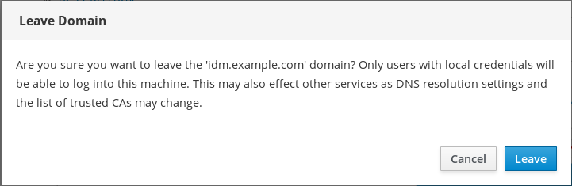
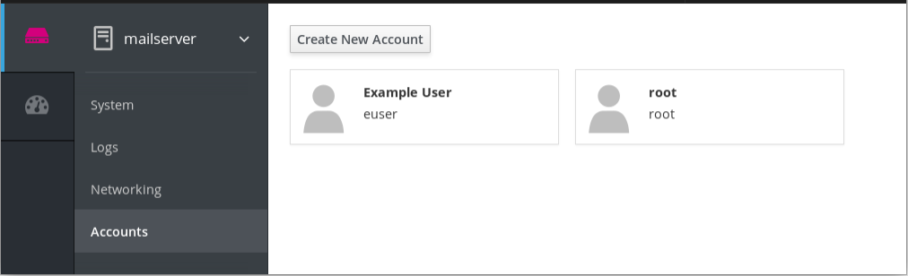

The following sections provide an overview of the basic tasks that system administrators might need to perform just after Red Hat Enterprise Linux has been installed.
Note
Such tasks may include items that are usually done already during the installation proces, but they do not have to be done necessarily, such as the registration of the system. The sections dealing with such tasks provide a brief summary of how this can be achived during the installation and links to related documentation.
For information on Red Hat Enterprise Linux installation, see Performing a standard RHEL installation.
Note
The following sections mention some commands to be performed. The commands that need to be entered by the root user have # in the prompt, while the commands that can be performed by a regular user, have $ in their prompt.
Although all post-installation tasks can be achieved through the command line, you can also use the RHEL 8 web console to perform some of them.
The RHEL 8 web console is an interactive server administration interface. It interacts directly with the operating system from a real Linux session in a browser.
The web console enables to perform these tasks:
- Monitoring basic system features, such as hardware information, time configuration, performance profiles, connection to the realm domain
- Inspecting system log files
- Managing network interfaces and configuring firewall
- Handling docker images
- Managing virtual machines
- Managing user accounts
- Monitoring and configuring system services
- Creating diagnostic reports
- Setting kernel dump configuration
- Managing packages
- Configuring SELinux
- Updating software
- Managing system subscriptions
- Accessing the terminal
For more information on installing and using the RHEL 8 web console, see Managing systems using the web console.
In this chapter, you will learn how to execute basic system settings in the web console and thus be able to:
- Restart or shutdown the system in the web console.
- Change a system host name.
- Join the system to a domain.
- Configure time and time zones.
- Change a performance profile.
The following procedure describes system restart executed in the web console.
Prerequisites
The web console must be installed and accessible.
For details, see Installing the web console.
Procedure
Log in to the RHEL 8 web console.
For details, see Logging in to the web console.
- Click System.
In the Power Options drop down list, select Restart.

- If there are users logged into the system, write a reason for the restart in the Restart dialog box.
In the Delay drop down list, select a time interval.

- Click Restart.
The system will be restarted according to your selection.
The following procedure describes system shutdown executed in the web console.
Prerequisites
The web console must be installed and accessible.
For details, see Installing the web console.
Procedure
Log in to the RHEL 8 web console.
For details, see Logging in to the web console.
- Click System.
In the Power Options drop down list, select Shut Down.
- If there are users logged into the system, write a reason for the shutdown in the Shut Down dialog box.
- In the Delay drop down list, select a time interval.
- Click Shut Down.
The system will be turned off according to your selection.
The host name identifies the system. By default, the host name is set to localhost, but you can change it.
Host names consists of two parts:
- Host name — It is a unique name which identifies a system.
-
Domain — If you want to use the machine in the network and use names instead of just IP addresses, you need to add the domain as a suffix behind the host name. For example:
mymachine.example.com
You can configure also a pretty host name in the RHEL web console. The pretty host name allows you to enter a host name with capital letters, spaces, and so on. The pretty host name displays in the web console, but it does not have to correspond with the host name.
Example:
Pretty host name: My Machine Host name: mymachine Real host name (Fully qualified domain name): mymachine.idm.company.com
Host names are stored in the /etc/hostname file, however, you can set or change the host name in the web console.
Prerequisites
The web console must be installed and accessible.
For details, see Installing the web console.
Procedure
Log in to the RHEL 8 web console.
For details, see Logging in to the web console.
- Click System.
Click the current host name.

- In the Change Host Name dialog box, enter the host name in the Pretty Host Name field.
In the Real Host Name field, the pretty name will be compounded with a domain name.
You can change the host name manually if it does not correspond with the pretty host name.
Click Change.

To verify that the host name is configured properly, try to log out from the web console and add to the browser the address with the new host name.

The following procedure describes joining the RHEL 8 system to the IdM domain.
Prerequisites
- IdM domain running and reachable from the client you want to join.
- IdM domain administrator credentials.
Procedure
Log in to the RHEL web console.
For details, see Logging in to the web console.
- Open the System tab.
Click Join Domain.

- In the Join a Domain dialog box, enter the host name of the IdM server in the Domain Address field.
In the Authentication drop down list, select if you want to use password or one time password for authentication.

- In the Domain Administrator Name field, enter the user name of the IdM administration account.
- In the password field, add the password or one time password according to what you selected in the Authentication drop down list above.
Click Join.

If the RHEL 8 web console did not display an error, the system has been joined to the IdM domain and you can see the domain name in the System screen.

Warning
If you click to the joined domain in the System screen, the system will display a warning dialog with the information about leaving the domain. If you click Leave, the system will leave the domain.

This section shows you how to set:
- The correct time zone
- Automatic time settings provided by an NTP server.
- A specific NTP server.
Prerequisites
The web console must be installed and accessible.
For details, see Installing the web console.
Procedure
Log in to the RHEL 8 web console.
For details, see Logging in to the web console.
- Click System.
Click the current system time.

- In the Change System Time dialog box, change the time zone if necessary.
In the Set Time drop down menu, select:
- Manually
- Automatically using NTP server — This is a default option. If the time of the system is correct, leave it as it is.
- Automatically using specific NTP servers — Use this option only if you need to synchronize the system with a specific NTP server and add the DNS name or IP address of the server.
Click Change.

The change is now available in the System tab.
Red Hat Enterprise Linux 8 includes performance profiles optimizing:
- Systems using Desktop
- Latency performance
- Network performance
- Low power consumption
- Virtual machines
The following procedure describes setting up performance profiles in the web console.
The RHEL 8 web console configures the tuned service.
For details about the tuned service, see Monitoring and managing system status and performance.
Prerequisites
The web console must be installed and accessible.
For details, see Installing the web console.
Procedure
Log in to the RHEL 8 web console.
For details, see Logging in to the web console.
- Click System.
In the Performance Profile field, click the current performance profile.

- In the Change Performance Profile dialog box, change the profile if necessary.
Click Change.

The change is now available in the System tab.
Red Hat Enterprise Linux System Roles is a collection of Ansible roles and modules that provide a configuration interface to remotely manage multiple RHEL systems. The interface enables managing system configurations across multiple versions of RHEL, as well as adopting new major releases.
Red Hat Enterprise Linux System Roles were introduced with Red Hat Enterprise Linux 7.4. For more information, see the Red Hat Enterprise Linux (RHEL) System Roles Red Hat KnowledgeBase article.
On Red Hat Enterprise Linux 8, the interface currently consists of the following roles:
- selinux
- kdump
- network
- timesync
All these roles are provided by the rhel-system-roles package available in the AppStream reposiory.
To apply a particular role, you need to fulfill the following prerequisites.
Prerequisites
The
rhel-system-rolespackage has been installed on the system that you want to use as a control node:~]# yum install rhel-system-roles
The Ansible Engine repository has been enabled, and the
ansiblepackage has been installed on the system that you want to use as a control node. Theansiblepackage is needed to run playbooks that use Red Hat Enterprise Linux System Roles.If you do not have a Red Hat Ansible Engine Subscription, you can use a limited supported version of Red Hat Ansible Engine provided with your Red Hat Enterprise Linux subscription. In this case, follow these steps:
Enable the RHEL Ansible Engine repository:
~]# subscription-manager refresh ~]# subscription-manager repos --enable ansible-2-for-rhel-8-x86_64-rpms
Install Ansible Engine:
~]# yum install ansible
If you have a Red Hat Ansible Engine Subscription, follow the procedure described in How do I Download and Install Red Hat Ansible Engine?.
You are able to create an Ansible playbook.
Playbooks represent Ansible’s configuration, deployment, and orchestration language. By using playbooks, you can declare and manage configurations of remote machines, deploy multiple remote machines or orchestrate steps of any manual ordered process.
A playbook is a list of one or more
plays. Everyplaycan include Ansible variables, tasks or roles.Playbooks are human-readable, and they are expressed in the
YAMLformat.For more information about playbooks, see Ansible documentation
To apply a particular role, use the following procedure.
Procedure
Create an Ansible playbook including the required role.
The classic way to use roles is via the
roles:option for a givenplay, as shown in the example below:--- - hosts: webservers roles: - rhel-system-roles.network - rhel-system-roles.timesyncFor more information on using roles in playbooks, see Ansible documentation.
See Ansible examples for example playbooks.
Note
Every role includes a README file, which documents how to use the role and supported parameter values. You can also find an example playbook for a particular role under the documentation directory of the role. Such documentation directory is provided by default with the
rhel-system-rolespackage, and can be found in the following location:/usr/share/doc/rhel-system-roles-<version>/SUBSYSTEM/
where SUBSYSTEM is the name of the subsystem that contains the individual role manages - selinux, kdump, network or timesync.
Execute the playbook on targeted hosts by running the
ansible-playbookcommand:ansible-playbook -i <name of the inventory> <name of the playbook>
An inventory is a list of systems against which Ansible works. For more information on how to create and inventory, and how to work with it, see Ansible documentation.
If you have not created an inventory in advance, you can do so even at the time of running
ansible-playbook:For cases with only one targeted host against which you want to run the playbook, use:
ansible-playbook -i host1, <name of the playbook>
For cases with multiple targeted hosts against which you want to run the playbook, use:
ansible-playbook -i host1,host2,….,hostn <name of the playbook>
For more detailed information on using the
ansible-playbookcommand, see theansible-playbookman page.
Basic configuration of environment includes:
- Date and time
- System locales
- Keyboard layout
Setting of these items is normally a part of the installation process. For more information, see Performing a standard RHEL installation.
Accurate timekeeping is important for a number of reasons. In Red Hat Enterprise Linux, timekeeping is ensured by the NTP protocol, which is implemented by a daemon running in user space. The user space daemon updates the system clock running in the kernel. The system clock can keep time by using various clock sources.
Red Hat Enterprise Linux 8 uses the chronyd daemon to implement NTP. chronyd is available from the chrony package. For more information on configuring and using NTP with chronyd, see Chapter 5, Using the Chrony suite to configure NTP.
Displaying the current date and time
To display the current date and time, use one of the following commands:
~]$
date~]$timedatectlNote that the
timedatectlcommand provides more verbose output, including universal time, currently used time zone, the status of the Network Time Protocol (NTP) configuration, and some additional information.
For more information on configuring the date and time during the installation, see Performing a standard RHEL installation.
Time settings in the web console describes Using the web console for configuring time settings.
System-wide locale settings are stored in the /etc/locale.conf file, which is read at early boot by the systemd daemon. The locale settings configured in /etc/locale.conf are inherited by every service or user, unless individual programs or individual users override them.
Basic tasks to handle the system locales:
Listing available system locale settings:
~]$
localectl list-localesDisplaying current status of the system locales settings:
~]$
localectl statusSetting or changing the default system locale settings:
~]# localectl set-locale LANG=locale
The keyboard layout settings control the layout used on the text console and graphical user interfaces.
Basic tasks to handle the keyboard layout include:
Listing available keymaps:
~]$
localectl list-keymapsDisplaying current status of keymap settings:
~]$
localectl statusSetting or changing the default system keymap:
~]# localectl set-keymap
Ways to configure network access during the installation proces:
- The menu at the Installation Summary screen in the graphical user interface of the Anaconda installation program
- The option in the text mode of the Anaconda installation program
- The Kickstart file
When the system boots for the first time after the installation has finished, any network interfaces which you configured during the installation are automatically activated.
For detailed information on configuration of network access during installation process, see Installing Red Hat Enterprise Linux 8.
Run the following commands to manage network connections using the nmcli utility.
Note
The nmcli utility has a powerful syntax completion feature when the Tab key is pressed twice. You need to have the bash-completion package installed to enable it.
To create a new connection:
~]# nmcli con add type type of the connection con-name connection name ifname ifname ipv4.addresses ipv4 address ipv4.gateway gateway address
Here, replace:
- type of the connection by the required type of the device
- connection name by the required connection name
- ifname by the required device name
- ipv4 address by the required IPv4 address/netmask
- gateway address by the required gateway address
Note that ipv4 address and gateway address are optional settings, while all remaining settings are required.
You can also create a new connection in assisted mode. To do so, run this command, and follow the instructions that will prompt you for input of particular configuration settings of this connection:
~]# nmcli -a con add
To modify the existing connection:
~]# nmcli con mod connection name setting.property newvalue
Here, replace:
- connection name by the name of the connection that you want to modify
- setting.property by the configuration setting that you want to modify
- newvalue by the required value of this configuration setting
For example, to set the method of the configuration of IPv4 address (ipv4.method) to auto for the connection named enp0, use the following command:
~]# nmcli con mod enp0 ipv4.method auto
To edit a connection, run the following command:
~]# nmcli connection edit connection nameHere, replace connection name by the name of the connection that you want to edit.
To display all connections:
~]# nmcli con show
To display active connections:
~]# nmcli con show --active
To display all configuration settings of a particular connection:
~]# nmcli con show con-name connection nameHere, replace connection name by the name of the required connection.
Then, follow the instructions that will prompt you for input of particular configuration settings. To display all possible options of any configuration setting, use the print command in the editor.
The NetworkManager text user interface (TUI) utility, nmtui, provides a text interface to configure networking by controlling NetworkManager.
in the web console, the menu enables you:
- To display currently received and sent packets
- To display the most important characteristics of available network interfaces
- To display content of the networking logs.
- To add various types of network interfaces (bond, team, bridge, VLAN)
You can configure the networking connections on multiple target machines using the network role.
The network role allows to configure the following types of interfaces:
- Ethernet
- Bridge
- Bonded
- VLAN
- MacVLAN
- Infiniband
The required networking connections for each host are provided as a list within the network_connections variable.
Warning
The network role updates or creates all connection profiles on the target system exactly as specified in the network_connections variable. Therefore, the network role removes options from the specified profiles if the options are only present on the system but not in the network_connections variable.
The following example shows how to apply the network role to ensure that an Ethernet connection with the required parameters exists:
Example 1.1. An example playbook applying the network role to set up an Ethernet connection with the required parameters
# SPDX-License-Identifier: BSD-3-Clause
---
- hosts: network-test
vars:
network_connections:
# Create one ethernet profile and activate it.
# The profile uses automatic IP addressing
# and is tied to the interface by MAC address.
- name: prod1
state: up
type: ethernet
autoconnect: yes
mac: "00:00:5e:00:53:00"
mtu: 1450
roles:
- rhel-system-roles.network
For more information on applying the network role, and for more examples on using the role, see System roles documentation.
The products installed on Red Hat Enterprise Linux, including the operating system itself, are covered by subscriptions.
A subscription to Red Hat Content Delivery Network is used to track:
- Registered systems
- Products installed on those system
- Subscriptions attached to those product
Your subscription can be registered during the installation process. For more information, see Performing a standard RHEL installation.
If you have not registered your system during the installation process, you can do it afterwards by applying the following procedure. Note that all commands in this procedure need to be performed as the root user.
Registering and subscribing your system
Register your system:
~]# subscription-manager register
The command will prompt you to enter your Red Hat Customer Portal user name and password.
Determine the pool ID of a subscription that you require:
~]# subscription-manager list --available
This command displays all available subscriptions for your Red Hat account. For every subscription, various characteristics are displayed, including the pool ID.
Attach the appropriate subscription to your system by replacing pool_id with the pool ID determined in the previous step:
~]# subscription-manager attach --pool=pool_id
The following describes subscribing the newly installed Red Hat Enterprise Linux using the RHEL 8 web console.
Prerequisites
Valid user account in the Red Hat Customer Portal.
See the Create a Red Hat Login page.
- Active subscription for the RHEL system.
Procedure
Type subscription in the search field and press the Enter key.

Alternatively, you can log in to the RHEL 8 web console. For details, see Logging in to the web console.
In the polkit authentication dialog for privileged tasks, add the password belonging user name displayed in the dialog.

- Click Authenticate.
In the Subscriptions dialog box, click Register.

Enter your Customer Portal credentials.

Enter the name of your organization.
You need to add the organization name or organization ID, if you have more than one account in the Red Hat Customer Portal. To get the org ID, go to your Red Hat contact point.
- Click the Register button.
At this point, your RHEL 8 system has been successfully registered.

This section provides information to guide you through the basics of software installation. It mentions the prerequisites that you need to fulfil to be able to install software, provides the basic information on software packaging and software repositories, and references the ways to perform basic tasks related to software installation.
The Red Hat Content Delivery Network subscription service provides a mechanism to handle Red Hat software inventory and enables you to install additional software or update already installed packages. You can start installing software once you have registered your system and attached a subscription, as described in the section called “Registering the system after the installation”.
All software on a Red Hat Enterprise Linux system is divided into RPM packages, which are stored in particular repositories. When a system is subscribed to the Red Hat Content Delivery Network, a repository file is created in the /etc/yum.repos.d/ directory.
Use the yum utility to manage package operations:
- Searching information about packages
- Installing packages
- Updating packages
- Removing packages
- Checking the list of currently available repositories
- Adding or removing a repository
- Enabling or disabling a repository
For information on basic tasks related to the installation of software, see the section called “Managing basic software-installation tasks with subscription manager and yum”.
The most basic software-installation tasks that you might need after the operating system has been installed include:
Listing all available repositories:
~]# subscription-manager repos --list
Listing all currently enabled repositories:
~]$
yum repolistEnabling or disabling a repository:
~]# subscription-manager repos --enable repository~]# subscription-manager repos --disable repositorySearching for packages matching a specific string:
~]$
yum searchstringInstalling a package:
~]# yum install package_nameUpdating all packages and their dependencies:
~]# yum update
Updating a package:
~]# yum update package_nameUninstalling a package and any packages that depend on it:
~]# yum remove package_nameListing information on all installed and available packages:
~]$
yum list allListing information on all installed packages:
~]$
yum list installed
Systemd is a system and service manager for Linux operating systems that introduces the concept of systemd units.
This section provides the information on how to ensure that a service is enabled or disabled at boot time. It also explains how to manage the services through the web console.
You can determine services that are enabled or disabled at boot time already during the installation process, or you can enable or disable a service on an installed operating system.
To create the list of services enabled or disabled at boot time during the installation process, use the services option in the Kickstart file:
services [--disabled=list] [--enabled=list]
Note
The list of disabled services is processed before the list of enabled services. Therefore, if a service appears on both lists, it will be enabled. The list of the services should be given in the comma separated format. Do not include spaces in the list of services.
To enable or disable a service on an already installed operating system:
~]# systemctl enable service_name~]# systemctl disable service_nameFor further details on enabling and disabling services, see the section called “Managing system services”.

Computer security is the protection of computer systems from the theft or damage to their hardware, software, or information, as well as from disruption or misdirection of the services they provide. Ensuring computer security is therefore an essential task not only in the enterprises processing sensitive data or handling some business transactions.
Computer security includes a wide variety of features and tools. This section covers only the basic security features that you need to configure after you have installed the operating system. For detailed information on securing Red Hat Enterprise Linux, see Configuring and managing security.
A firewall is a network security system that monitors and controls the incoming and outgoing network traffic based on predetermined security rules. A firewall typically establishes a barrier between a trusted, secure internal network and another outside network.
The firewall is provided by the firewalld service, which is automatically enabled during the installation. However, if you explicitly disabled the service, you can re-enable it, as described in the section called “Re-enabling the firewalld service”.
In case that the firewalld service is disabled after the installation, Red Hat recommends to consider re-enabling it.
You can display the current status of firewalld even as a regular user:
~]$ systemctl status firewalld
If firewalld is not enabled and running, switch to the root user, and change its status:
~]# systemctl start firewalld
~]# systemctl enable firewalld
For detailed information on configuring and using firewall, see Using and configuring firewalls.
In the web console, use the option under to enable or disable the firewalld service.
By default, the firewalld service in the web console is enabled. To disable it, set off as shown below. Additionally, you can choose the services that you want to allow through firewall.

Security Enhanced Linux (SELinux) is an additional layer of system security that determines which process can access which files, directories, and ports.
SELinux states
SELinux has two possible states:
- Enabled
- Disabled
When SELinux is disabled, only Discretionary Access Control (DAC) rules are used.
SELinux modes
When SELinux is enabled, it can run in one of the following modes:
- Enforcing
- Permissive
Enforcing mode means that SELinux policies are enforced. SELinux denies access based on SELinux policy rules, and enables only the interactions that are particularly allowed. Enforcing mode is the default mode after the installation and it is also the safest SELinux mode.
Permissive mode means that SELinux policies are not enforced. SELinux does not deny access, but denials are logged for actions that would have been denied if running in enforcing mode. Permissive mode is the default mode during the installation. Operating in permissive mode is also useful in some specific cases, for example if you require access to the Access Vector Cache (AVC) denials when troubleshooting problems.
For further information on SELinux, see Configuring and managing security.
By default, SELinux operates in permissive mode during the installation and in enforcing mode when the installation has finished.
However, in some specific scenarios, SELinux might be explicitly set to permissive mode or it might even be disabled on the installed operating system. This can be set for example in the kickstart configuration.
Important
Red Hat recommends to keep your system in enforcing mode.
To display the current SELinux mode, and to set the mode as needed:
Ensuring the required state of SELinux
Display the current SELinux mode in effect:
~]$
getenforceIf needed, switch between the SELinux modes.
The switch can be either temporary or permanent. A temporary switch is not persistent across reboots, while permanent switch is.
To temporary switch to either enforcing or permissive mode:
~]# setenforce Enforcing
~]# setenforce Permissive
To permanently set the SELinux mode, modify the SELINUX variable in the
/etc/selinux/configconfiguration file.For example, to switch SELinux to enforcing mode:
# This file controls the state of SELinux on the system. # SELINUX= can take one of these three values: # enforcing - SELinux security policy is enforced. # permissive - SELinux prints warnings instead of enforcing. # disabled - No SELinux policy is loaded. SELINUX=enforcing
In the web console, use the option to turn SELinux enforcing policy on or off.
By default, SELinux enforcing policy in the web console is on, and SELinux operates in enforcing mode. By turning it off, you can switch SELinux into permissive mode. Note that such deviation from the default configuration in the /etc/sysconfig/selinux file is automatically reverted on the next boot.

You can manage various SELinux local customizations on multiple target machines using the selinux role.
The following example shows how to apply the selinux role to set SELinux mode and reboot the managed host if required to apply the changes:
Example 1.2. An example playbook applying the selinux role for setting SELinux mode
- hosts: selinux-test
vars:
# possible values: enforcing, permissive, disabled
selinux_state: enforcing
tasks:
- name: execute the role and catch errors
block:
- include_role:
name: rhel-system-roles.selinux
rescue:
# Fail if failed for a different reason than selinux_reboot_required.
- name: handle errors
fail:
msg: "role failed"
when: not selinux_reboot_required
- name: Unconditionally reboot the machine with all defaults
reboot:
For more information on applying the selinux role to manage various local customizations, such as applying restorecon to portions of file system tree, or managing file contexts, SELinux booleans, logins, or ports, see System roles documentation.
If you want to secure your communication with another computer, you can use SSH-based authentication.
Secure Shell (SSH) is a protocol which facilitates client-server communication and allows users to log in to any host system running SSH remotely. SSH secures the connection. The client transmits its authentication information to the server using encryption, and all data sent and received during a session are transferred under the encryption.
SSH enables its users to authenticate without a password. To do so, SSH uses a private-public key scheme.
For more information about SSH, see Configuring and managing security.
To be able to use SSH connection, create a pair of two keys consisting of a public and a private key.
Creating the key files and Copying them to the Server
Generate a public and a private key:
~]$
ssh-keygenBoth keys are stored in the
~/.ssh/directory:-
~/.ssh/id_rsa.pub- public key ~/.ssh/id_rsa- private keyThe public key does not need to be secret. It is used to verify the private key. The private key is secret. You can choose to protect the private key with the passphrase that you specify during the key generation process. With the passphrase, authentication is even more secure, but is no longer password-less. You can avoid this using the
ssh-agentcommand. In this case, you will enter the passphrase only once - at the beginning of a session.
-
Copy the most recently modified public key to a remote machine you want to log into:
~]# ssh-copy-id USER@hostname
As a result, you are now able to enter the system in a secure way, but without entering a password.
To increase system security, you can disable SSH access for the root user, which is enabled by default.
Disabling SSH root login
Access the
/etc/ssh/sshd_configfile:~]# vi /etc/ssh/sshd_config
Change the line that reads
#PermitRootLogin yesto:PermitRootLogin no
Restart the
sshdservice:~]# systemctl restart sshd
Note
When using PermitRootLogin no, the root user cannot login to system directly. Alternatively, the root user might be allowed to login, but using a password-less authentication method, typically the key-based authentication, described in the section called “Configuring key-based SSH access”. To ensure this, specify PermitRootLogin prohibit-password in the /etc/ssh/sshd_config file.
Red Hat Enterprise Linux is a multi-user operating system, which enables multiple users on different computers to access a single system installed on one machine. Every user operates under its own account, and managing user accounts thus represents a core element of Red Hat Enterprise Linux system administration.
Normal and System Accounts
Normal accounts are created for users of a particular system. Such accounts can be added, removed, and modified during normal system administration.
System accounts represent a particular applications identifier on a system. Such accounts are generally added or manipulated only at software installation time, and they are not modified later.
Warning
System accounts are presumed to be available locally on a system. If these accounts are configured and provided remotely, such as in the instance of an LDAP configuration, system breakage and service start failures can occur.
For system accounts, user IDs below 1000 are reserved. For normal accounts, you can use IDs starting at 1000. However, the recommended practice is to assign IDs starting at 5000. See Reserved user and group IDs for more information. The guidelines for assigning IDs can be found in the /etc/login.defs file:
# Min/max values for automatic uid selection in useradd # UID_MIN 1000 UID_MAX 60000 # System accounts SYS_UID_MIN 201 SYS_UID_MAX 999
What groups are and which purposes they can be used for
A group in an entity which ties together multiple user accounts for a common purpose, such as granting access to particular files.
The most basic tasks to manage user accounts and groups, and the appropriate command-line tools, include:
Displaying user and group IDs:
~]$
idCreating a new user account:
~]# useradd [options] user_nameAssigning a new password to a user account belonging to username:
~]# passwd user_nameAdding a user to a group:
~]# usermod -a -G group_name user_name
For detailed information on managing users and groups, see the section called “Introduction to Users and Groups”.
With user accounts displayed in the RHEL 8 web console you can:
- Authenticate users when accessing the system.
- Set them access rights to the system.
The RHEL 8 web console displays all user accounts located in the system. Therefore, you can see at least one user account just after the first login to the web console.
Ones you are logged in to the RHEL 8 web console, you can:
- Create new users accounts.
- Change their parameters.
- Lock accounts.
- Terminate the user session.
You can find the account management in the Accounts settings.

The following describes adding system user accounts in the RHEL 8 web console and setting administration rights to the accounts.
Procedure
- Log in to the RHEL web console.
- Click Accounts.
- Click Create New Account.
In the Full Name field, enter the full name of the user.
The RHEL web console automatically suggests a user name from the full name and fills it in the User Name field. If you do not want to use the original naming convention consisting of the first letter of the first name and the whole surname, update the suggestion.
In the Password/Confirm fields, enter the password and retype it for verification that your password is correct. The color bar placed below the fields shows you security level of the entered password, which does not allow you to create a user with a weak password.

- Click Create to save the settings and close the dialog box.
- Select the newly created account.
- Select Server Administrator in the Roles item.

Now you can see the new account in the Accounts settings and you can use the credentials to connect to the system.
This section provides an introduction to the kernel crash dump mechanism, also called kdump, and briefly explains what kdump is used for in the section called “What kdump is and which tasks it can be used for”.
Activation of the kdump service is a part of the installation process, as described in Installing Red Hat Enterprise Linux 8. This section summarizes how to manually enable the kdump service if it is disabled after the installation in the section called “Ensuring that kdump is installed and enabled after the installation process”.
You can also use the web console to configure kdump. See the section called “Configuring kdump in the RHEL 8 web console” for more information.
In case of a system crash, you can use the kernel crash dump mechanism called kdump that enables you to save the content of the system’s memory for later analysis. The kdump mechanism relies on the kexec system call, which can be used to boot a Linux kernel from the context of another kernel, bypass BIOS, and preserve the contents of the first kernel’s memory that would otherwise be lost.
When kernel crash occurs, kdump uses kexec to boot into a second kernel, a capture kernel, which resides in a reserved part of the system memory that is inaccessible to the first kernel. The second kernel captures the contents of the crashed kernel’s memory, a crash dump, and saves it.
For more detailed information about kdump, see Managing, monitoring and updating the kernel.
To ensure that kdump is installed, and to configure it:
Checking whether kdump is Installed and Configuring kdump
To check whether kdump is installed on your system:
~]$
rpm -q kexec-toolsIf not installed, to install kdump, enter as the
rootuser:~]# yum install kexec-tools
To configure kdump:
Use either the command line or graphical user interface as described in Managing, monitoring and updating the kernel.
If you need to install the graphical configuration tool:
~]# yum install system-config-kdump
In the web console, select to verify:
- the kdump status
- the amount of memory reserved for kdump
- the location of the crash dump files

You can configure kdump on multiple target machines using the kdump role.
Warning
The kdump role replaces the kdump configuration of the managed hosts entirely. If kdump role is applied, all previous kdump settings are lost, even if they are not specified by the role variables. The /etc/sysconfig/kdump and /etc/kdump.conf configuration files are replaced.
The following example shows how to apply the kdump role to set the location of the crash dump files:
Example 1.3. An example playbook applying the kdump role for setting the location of kdump files
---
- hosts: kdump-test
vars:
kdump_path: /var/crash
roles:
- rhel-system-roles.kdump
For more information on applying the kdump role to manage various kdump configurations, see System roles documentation.
When a software or hardware failure breaks the operating system, you need a mechanism to rescue the system. It is also useful to have the system backup saved. Red Hat recommends using the Relax-and-Recover (ReaR) tool to fulfil both these needs.
ReaR is a disaster recovery and system migration utility which enables you to create the complete rescue system. By default, this rescue system restores only the storage layout and the boot loader, but not the actual user and system files.
Additionally, certain backup software enables you to integrate ReaR for disaster recovery.
ReaR enables to perform the following tasks:
- Booting a rescue system on the new hardware
- Replicating the original storage layout
- Restoring user and system files
To install ReaR, enter as the root user:
~]# yum install rear genisoimage syslinux
Use the settings in the /etc/rear/local.conf file to configure ReaR.
To create the rescue system, perform the following command as the root user:
~]# rear mkrescue
ReaR contains a fully-integrated built-in, or internal, backup method called NETFS.
To make ReaR use its internal backup method, add these lines to the /etc/rear/local.conf file:
BACKUP=NETFS BACKUP_URL=backup location
You can also configure ReaR to keep the previous backup archives when the new ones are created by adding the following line to /etc/rear/local.conf:
NETFS_KEEP_OLD_BACKUP_COPY=y
To make the backups incremental, meaning that only the changed files are backed up on each run, add this line to /etc/rear/local.conf:
BACKUP_TYPE=incremental
When troubleshooting a problem, you may appreciate the log files that contain different information and messages about the operating system. The logging system in Red Hat Enterprise Linux is based on the built-in syslog protocol. Particular programs use this system to record events and organize them into log files, which are useful when auditing the operating system and troubleshooting various problems.
The syslog messages are handled by two services:
-
The
systemd-journalddaemon -
The
rsyslogservice
The systemd-journald daemon collects messages from various sources and forwards them to the rsyslog service for further processing. The sources from which the messages are collected are:
- Kernel
- Early stages of the boot process
- Standard output and error of daemons as they start up and run
- Syslog
The rsyslog service sorts the syslog messages by type and priority, and writes them to the files in the /var/log directory, where the logs are persistently stored.
The syslog messages are stored in various subdirectories under the /var/log directory according to what kind of messages and logs they contain:
-
var/log/messages- all syslog messages except those mentioned below -
var/log/secure- security and authentication-related messages and errors -
var/log/maillog- mail server-related messages and errors -
var/log/cron- log files related to periodically executed tasks -
var/log/boot.log- log files related to system startup
To obtain support from Red Hat, use the Red Hat Customer Portal, which provides access to everything available with your subscription.
This section describes:
- Obtaining Red Hat support, in the section called “Obtaining Red Hat Support through Red Hat Customer Portal”
- Using the SOS report to troubleshoot problems, in the section called “Using the SOS report to troubleshoot problems”
By using the Red Hat Customer Portal you can:
- Open a new support case
- Initiate a live chat with a Red Hat expert
- Contact a Red Hat expert by making a call or sending an email
To access the Red Hat Customer Portal, go to https://access.redhat.com.
The SOS report collects configuration details, system information and diagnostic information from a Red Hat Enterprise Linux system. Attach the report when you open a support case.
Note that the SOS report is provided in the sos package, which is not installed with the default minimal installation of Red Hat Enterprise Linux.
To install the sos package:
~]# yum install sos
To generate an SOS report:
~]# sosreport
To attach the sos report to your support case, see the Red Hat Knowledgebase article How can I attach a file to a Red Hat support case?. Note that you will be prompted to enter the number of the support case, when attaching the sos report.
For more information on SOS report, see the Red Hat Knowledgebase article What is a sosreport and how to create one in Red Hat Enterprise Linux 4.6 and later?.